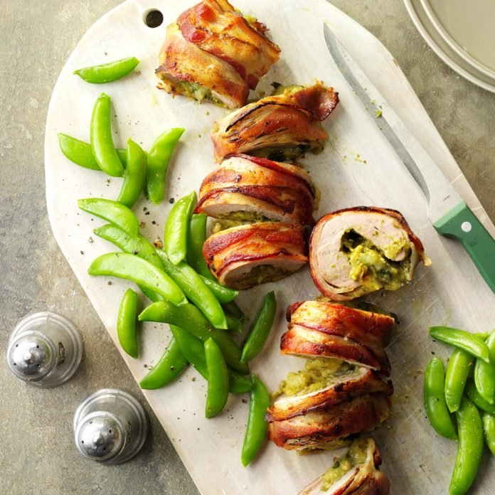
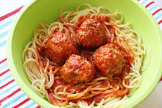

Crown Roast of pork with mushroom Dressing

It looks so elegant that everyone thinks I spent a lot of time on this roast.
But it's actually so easy! The biggest challenge is to remember to order the crown
roast from the meat department ahead of time. —Betty Claycomb, Alverton, Pennsylvania
Bacon Wrapped Pesto Pork
I love to serve this family-favorite tenderloin—maybe because of
the compliments that come with it! When the weather warms up,
we grill it instead. —Megan Riofski, Frankfort, Illinois
Spaghetti and Meatballs
Making your sauce is always better—it's cheaper and so much more
flavorful. This one comes together in about 15
minutes and is the perfect accompaniment to the big garlicky meatballs
. (If you have leftovers, try our Spaghetti and Meatball Cups. Kids LOVE them.)